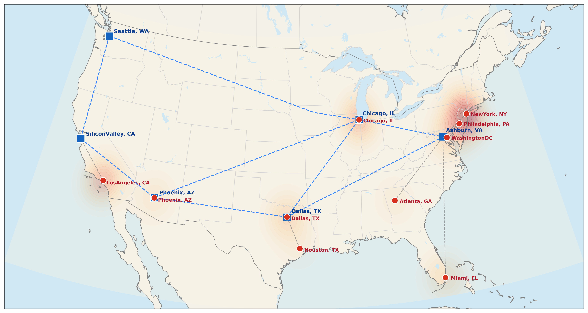
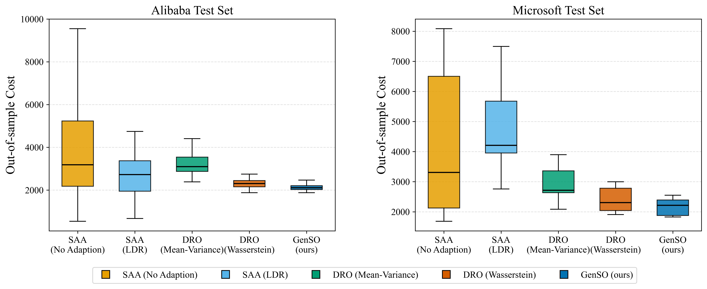

Stochastic Optimization · Generative AI · Decision Rules
Beyond Linear Decision Rules: LLM-Guided Representation Discovery for Data-Driven Optimization
Generative Stochastic Optimization (GenSO): using LLMs to discover nonlinear recourse representations — without sacrificing rigor, tractability, or interpretability.
Huan Zhang, Yang Wang (Northwestern Polytechnical University) · Hanzhang Qin (National University of Singapore) · Yue Zhao (HSBC Business School, Peking University)
Conference Presentation · ~40 minutes
Agenda
Outline
1 · Problem & Motivation
The expressiveness–tractability tradeoff of decision rules, and the opportunity created by LLMs.
2 · Related Literature
Where GenSO sits across five streams of OR / ML research.
3 · The GenSO Framework
From LDR to Generative LDR; the LLM-guided evolutionary discovery loop.
4 · Theory: Finite-Sample & Search Bounds
Separating estimation error from search error; key insights.
5 · Numerical Studies
Multi-period inventory control & data-center location with real cloud traces.
6 · Takeaways
What LLMs should and should not do inside optimization.
01
Problem & Motivation
Why even an optimally-fitted linear decision rule can be far from optimal — and why this gap cannot be closed with more data.
Problem · 1 / 5
Decision-Making Under Uncertainty
Stochastic optimization with recourse: a here-and-now decision \(\bm x\) is chosen before uncertainty \(\tilde{\bm z}\) is revealed; a wait-and-see recourse \(\bm y\) adapts after.
Central question: the decision maker commits to \(\bm x\) before the outcome, then adapts \(\bm y(\bm z)\) after — we want one deployable, expressive, yet tractable rule, not a separate solution per scenario.
Reduces an intractable adaptive problem to a finite LP
Small coefficient dimension
Interpretable & deployable
✗ The hidden cost
Strong inductive bias: recourse must vary linearly with \(\bm z\)
Cannot express thresholds, ratios, lags, peaks…
Classical rules trade off along a frontier; GenLDR pushes past it — yet stays below the intractable all-policies ceiling.
Oracle class & key point
\(\mathcal R:=\{\bm y:\mathcal Z\to\mathbb R^{N_y}:\bm y\text{ is measurable and non-anticipative}\}\) is the unrestricted oracle class.
Key point: Even perfectly fitted LDR coefficients can remain far from optimal when the representation is too restrictive.
Problem · 3 / 5
An Irreducible Approximation Gap
First define the performance notation. For any deployed decision rule \(\bm y\), let \(\mathcal J(\bm x,\bm y)\) be its true out-of-sample expected cost.
Here \(\mathcal R\) is the unrestricted oracle policy class, and \(\mathcal L_\Phi\) is the decision-rule class induced by a fixed basis \(\Phi\). Then the deployed cost decomposes as:
$$\underbrace{\mathcal J(\hat{\bm x},\hat{\bm y})-Z^\star_{\mathcal R}}_{\text{total gap to oracle}}=\underbrace{\mathcal J(\hat{\bm x},\hat{\bm y})-Z^\star_{\Phi}}_{\text{estimation error}\ \to 0\ \text{as }S\to\infty}\;+\;\underbrace{Z^\star_{\Phi}-Z^\star_{\mathcal R}}_{\text{representation gap}}$$
Estimation error
Vanishes with more data \(S\). Classical statistical learning.
Representation gap
Does not vanish with data. Fixed once the basis \(\Phi\) (e.g. raw LDR) is chosen.
More data lowers each curve, but a fixed basis plateaus above the oracle. GenSO lowers the plateau itself.
Implication
Good recourse often depends on nonlinear summaries — demand seasonality, workload imbalance, recent volatility, bottlenecks. To close the gap we must enrich the representation, not just collect more data.
Problem · 4 / 5
LLMs: An Opportunity — and a Trap
The opportunity
LLMs generate expressions, executable code, and problem-specific abstractions from textual + mathematical + domain context — exactly the nonlinear features that are hard to hand-design.
The trap: LLM as end-to-end solver
Hallucinations
No feasibility / optimality guarantees
Limited interpretability
The LLM only proposes the representation; it never chooses \(\bm x\) or the coefficients \(\bm y_h\).
Design principle
Use the LLM for what it is uniquely good at — proposing functional structure — and keep optimization for what it is uniquely good at: fitting, feasibility, and out-of-sample evaluation.
This separation of roles is the heart of the paper. The LLM never chooses \(\bm x\) or the coefficients \(\bm y_h\).
Problem · 5 / 5
Our Answer & Contributions
GenSO in one line
The LLM searches over representations; optimization fits coefficients. Recourse stays linear in fitted coefficients, but over LLM-generated basis functions.
GenSO is a closed loop — generate → fit → validate → evolve — and the best basis is deployed.
① GenLDR
Generated representations generalize LDR while preserving tractability.
② GenSO framework
LLM-guided evolutionary search plus optimization-based validation.
③ Theory
Finite-sample fixed-basis bound plus LLM-search performance bound.
④ Evidence
Inventory control and data-center studies show OOS gains and interpretable structures.
02
Related Literature
Five streams — and how GenSO differs from each.
Literature · 1 / 4
Data-Driven Stochastic & Robust Optimization
Stochastic / SAA
Model uncertainty via a distribution; SAA replaces it with the empirical one — asymptotic & finite-sample guarantees.
Birge and Louveaux (2011); Kleywegt et al. (2002); Shapiro et al. (2009)
Robust / Adjustable RO
Guard against all realizations in an uncertainty set; adjustable RO for adaptivity.
Ben-Tal et al. (2004); Bertsimas and Sim (2004)
Distributionally Robust
Worst case over an ambiguity set (moment, conic, Wasserstein); robust satisficing.
Delage and Ye (2010); Mohajerin Esfahani and Kuhn (2018); Long et al. (2023)
Our relation
GenSO is compatible with all of these. For a fixed generated basis, basis values are lifted uncertain quantities; coefficients can be fit by SAA, robust, or DRO machinery — enriching recourse while keeping tractability and out-of-sample evaluation.
Literature · 2 / 4
Decision Rules & Operational Data Analytics
Decision rules in optimization
LDR (Ben-Tal et al. 2004); optimality of affine rules (Bertsimas and Goyal 2012, Georghiou et al. 2026)
Deflected / segregated LDR (Chen et al. 2008, Chen and Zhang 2009); polynomial rules (Bampou and Kuhn 2011); piecewise-linear & primal-dual (Kuhn et al. 2011)
Lifted uncertainty in adaptive DRO (Bertsimas et al. 2019); multi-deflected CARA (Chen et al. 2025)
ODA & prescriptive analytics
Operational statistics judged by decision value, not predictive accuracy (Feng and Shanthikumar 2023)
Covariate-to-decision prescriptions (Bertsimas and Kallus 2020, Ban and Rudin 2019)
The common limitation
In all of these, the transformation / lifting / basis is specified manually by the modeler. GenSO automates this representation-design step. ODA serves as a conceptual bridge: both judge data summaries by downstream decision value.
Literature · 3 / 4
LLM-Guided Function Search & LLMs in OR
LLM + evolutionary search
FunSearch (Romera-Paredes et al. 2024): pair an LLM with an evaluator to discover new mathematical constructions / algorithms. Extended by EoH (Liu et al. 2024a), ReEvo (Ye et al. 2024), AlphaEvolve (Novikov et al. 2025), …
Mostly in CS/AI; LLMs generate complete programs.
LLMs in OR
Auto-formulation: NL → model (OptiMUS; ORLM, Huang et al. 2025)
Auto-modeling for robust / DP / SAA
LLMs as end-to-end combinatorial solvers
Operational apps: fleets, inventory; OM vision papers
Our positioning
We transfer the FunSearch idea to adaptive decision rules and redesign the search around mathematical optimization: the LLM searches for expressive representations, while coefficients come from an optimization model — not an end-to-end optimizer, not a replacement for modeling.
Literature · 4 / 4
Where GenSO Sits
Approach
Who designs the representation?
Tractable?
Guarantees?
Interpretable?
Classical LDR
Modeler (raw \(z_i\))
Yes (LP)
Yes
Yes
Polynomial / PWL rules
Modeler (fixed family)
Yes, but dim. blows up
Yes
Medium
ODA / prescriptive
Modeler (hand-crafted stats)
Yes
Yes
Yes
LLM end-to-end solver
LLM (whole decision)
—
No
Low
GenSO (this work)
LLM proposes basis; opt. fits
Yes (LP/MILP)
Yes
Yes
The gap we fill
A method that gets the expressiveness of generative search while keeping the rigor, tractability, and interpretability of optimization.
03
The GenSO Framework
From the LDR to the Generative LDR, and the LLM-guided discovery loop that finds the basis.
Framework · 1 / 10
Stochastic Linear Optimization with Recourse
The backbone. Coefficient mappings are linear in \(\bm z\) up to an intercept:
Per-scenario \(\bm y_s\) is optimal in-sample but is not a function of \(\bm z\) → it cannot be applied to a new realization. We need a parametric rule.
Linear in LLM-generated basis functions \(\Phi=\{\phi_h\}\).
“Generative” = the source of the basis: produced by generative AI rather than specified by hand. Classical LDR is the special case \(\phi_h(\bm z)=z_h,\ H=N_z\).
Crucial property
For any fixed \(\Phi\), the SAA problem stays a linear program in \(\bm x\) and \(\{\bm y_h\}\) — basis values are just numerical inputs. Expressiveness ↑, tractability preserved.
Framework · 3 / 10
In-Sample Hierarchy
Proposition
For any basis set \(\Phi\supseteq\{z_h\}_{h=1}^H\): \(\ \mathcal L^{N_z,N_y}\subseteq\mathcal L_\Phi^{N_z,N_y}\), hence
Enriching the basis can only improve the in-sample objective — a deterministic consequence of feasibility.
This holds for any enrichment, regardless of basis quality. So in-sample improvement is not the interesting question.
The real challenge
Does the enriched rule generalize out-of-sample? Fitting \(H+1\) coefficient vectors on \(S\) scenarios introduces estimation error. This needs the statistical analysis in Section 4.
Framework · 4 / 10
LLM-Guided Representation Discovery
A closed evolutionary loop, repeated \(K\) iterations. The LLM and the optimization model act in tandem, but with sharply separated roles:
LLM Representation generator
Writes, recombines, mutates, and repairs executable basis functions.
OPT Validation engine
Fits coefficients, checks feasibility, scores out-of-sample, selects parents, and manages the Pareto population.
The prompt \(\bm\pi^{(k)}\) encodes the problem description, the required I/O format, and feedback from previously evaluated bases. The detailed algorithmic picture appears on the five-stage algorithm slide.
Framework · 5 / 10
Optimization-Based Validation
Given a generated basis \(\Phi^{(k)}\), GenSO evaluates it in two steps:
(i) Fit coefficients by solving an LP (basis values are constants):
LLM operators: recombine parents and mutate strong individuals by editing code.
Repair: invalid functions are fixed or discarded.
Management: retain non-dominated offspring and loop for \(K\) iterations.
Why the picture matters
The LLM explores representation space, while optimization decides which representations survive.
Framework · 7 / 10
Why a MILP for Parent Selection?
Unlike scalar-fitness selection, GenSO keeps a vector fitness \(\bm f_\Phi\in\mathbb R^{S_{\rm val}}\) — scenario-level performance is preserved. Parents are chosen by goal-programming MILP with three objectives:
Coverage
Minimize the gap between best fitness of selected parents and best of the whole population, across all validation scenarios.
Size control
Penalize deviation from target size \(G_2\) — bounds the crossover prompt length.
Quality floor
Exclude consistently poor parents; threshold \(G_3\) drifts from mean → best fitness over generations.
Effect
Selects parents that are good on different scenarios — pairing complementary strengths, so crossover can combine specialized basis functions rather than near-duplicates.
Framework · 8 / 10
Why LLM-Generated Representations?
Family
Strength
Limitation
Raw LDR
Small coeff. dim., tractable
Only linear in raw \(\bm z\) → fixed approximation gap
Polynomial
Approximates smooth recourse
# monomials explodes with dimension & degree
Piecewise-linear
Great for thresholds
Regions/breakpoints must be chosen by analyst
GenSO basis
Problem-specific nonlinear summaries, mixed forms
No need to commit to one global family
The central merit
GenSO is a description-guided navigator between classical choices. It keeps the problem linear in fitted coefficients, while LLM-generated programs expand the recourse rule’s representational vocabulary.
Framework · 9 / 10
Extension to Multi-Stage Decision Rules
Decisions made sequentially; the rule at period \(t\) may depend only on the observed history. Non-anticipativity is enforced by construction — every period-\(t\) basis takes only \(\bm z_{[t-1]}\):
The LLM generates a different history-summary at each period — natural when the oracle rule needs different features over time.
Still an LP
For fixed \(\bm\Phi\), all basis values are numerical inputs → the multi-stage SAA is a linear program in \(\bm x\) and \(\{\bm y_{t,h}\}\).
04
Theory: Finite-Sample & Search Bounds
Separating what is purely statistical from what depends on the LLM search.
Bounds · 1 / 10
The Analytical Challenge
The LLM enters the model in a non-standard way: it does not output the decision rule — it proposes basis functions over which an SAA problem fits coefficients.
✗ Naïve approach
Treat the entire LLM as a hypothesis class → would need Rademacher / VC / metric-entropy control over a black-box space of programs (prompts, decoding, proprietary training data). Intractable.
✓ Our strategy
Condition on the generated basis. Once \(\Phi\) is fixed, the rule is linear in a finite \(\bm w\) and the loss is linear → control fitting by a sub-Gaussian argument. The LLM appears only in the search term.
The scenario cost is linear in \(\bm w\). So uniform convergence reduces to controlling \(\|\hat{\bm\xi}_S-\bar{\bm\xi}\|_2\) — concentration of a sample mean — with no global complexity measure of the LLM program class.
Bounds · 4 / 10
Assumptions (Fixed Basis)
(i) Bounded optimizers
Independent components of \(\tilde{\bm z}\); stacked optimal coefficients satisfy \(\|\bm w\|_2\le R_\Phi\). Prevents the empirical optimizer from amplifying sampling noise with huge coefficients.
(ii) Bounded differences
\(\bm\xi(\cdot)\) changes by at most \(L_i\) when coordinate \(i\) changes. More targeted than a global Lipschitz assumption.
These define the sensitivity constant used in the finite-sample bound:
By McDiarmid's inequality, bounded differences ⇒ every 1-D projection of \(\bm\xi(\tilde{\bm z})-\mathbb E\bm\xi\) is sub-Gaussian with parameter \(\le\sigma_\Phi\).
Bounds · 5 / 10
Proposition: Uniform Convergence
Proposition 1
Under the assumptions, for any fixed \(\Phi\), with probability \(\ge 1-\eta\):
$$\sup_{\|\bm w\|_2\le R_\Phi}\big|\mathcal J_\Phi(\bm w)-\hat{\mathcal J}_S(\bm w)\big|\ \le\ C R_\Phi\sigma_\Phi\sqrt{\tfrac{N+\log(1/\eta)}{S}}$$
Proof in three moves
1 · One direction
McDiarmid ⇒ each projection is sub-Gaussian; sample mean has parameter \(\sigma/\sqrt S\).
2 · \(\varepsilon\)-net
Cover the sphere by a \(1/2\)-net of size \(\le 5^{N}\); norm \(\le 2\max_{\text{net}}|\bm u^\top\bm v|\).
3 · Union bound
Over the net → convert back to a Euclidean-norm bound.
Uniformity is essential: the SAA optimizer is selected after seeing the data.
Bounds · 6 / 10
Theorem 1: Finite-Sample Bound
Theorem 1
For a fixed basis \(\Phi\), with probability \(\ge 1-\eta\) over \(S\) i.i.d. scenarios:
A frozen LLM + prompt induces a distribution over executable bases, \(\mathbb Q_{\bm\theta}(\cdot\mid\bm\pi)\) — a problem-conditioned prior over representations. Empirical scaling laws motivate:
(Pinsker's inequality.) Larger models place more mass on \(\epsilon\)-good representations.
Bounds · 8 / 10
Assumption: LLM Prior Mass / Hit Probability
Assumption (hit probability)
There exist \(c_1,c_2,\alpha>0\) (independent of \(K,S,\eta,\eta',|\bm\theta|\)) such that each search round hits an \(\epsilon\)-good basis with probability
Replaces the fixed gap by \(\epsilon\) + an exponentially shrinking search penalty.
The tradeoff & the levers
GenSO can improve along three axes a fixed basis cannot: more search budget \(K\), a larger model \(|\bm\theta|\), and a better prompt (higher \(\epsilon\)-good mass). Multi-stage: search effort scales as \(K\sum_t H_t\); estimation scales like \(\sqrt{T(H+1)/S}\).
05
Numerical Studies
Multi-period inventory control (synthetic demand) & data-center location with real cloud workload traces.
Compares the most recent demand with the nominal seasonal level. Positive values signal stronger-than-expected demand; negative values signal weaker demand.
Detects whether past demand has exceeded a high-demand threshold. The clipping maps the signal into \([0,1]\), avoiding overreaction to extreme outliers.
Key insight
The LLM discovers lagged demand, thresholds, clipping, scaling, and cyclical phase terms — structures hard to pre-commit to with one polynomial or PWL family.
Numerical · 5 / 6
Case 2 — Data Center Location + Job Scheduling
Joint here-and-now: which sites to open, capacity, demand-to-site assignment. Adaptive recourse: per-period capacity allocation with backlog & terminal outsourcing → a MILP per fixed basis.
Real-world calibration
6 US data-center sites, 10 metro demand locations (PNNL IM3 Atlas)
Demand from Alibaba 2018 & Azure 2019 production traces
Costs calibrated to IM3 projections; dispatch ∝ geodesic distance
OOD test: train on Alibaba, also test on Microsoft

Candidate data-center sites & metro demand locations.
Numerical · 6 / 6
Case 2 — Results & Out-of-Distribution Robustness
Multi-period \(T=8\). Mean cost; lower is better. GenSO wins on both the in-distribution (Alibaba) and OOD (Microsoft) test sets.
Method
Alibaba
Microsoft (OOD)
SAA (No Adapt.)
3657
4132
SAA (LDR)
2658
4608
DRO (Mean–Var)
3208
2867
DRO (Wasserstein)
2304
2399
GenSO (Ours)
2123
2173
Generalization
vs LDR on OOD: ~53%↓. GenSO also has the smallest std & CVaR — the learned bases transfer to a different trace distribution.

(a) Alibaba in-distribution (b) Microsoft out-of-distribution.
Numerical · Insights
What the Experiments Tell Us
Consistent wins
GenSO beats SAA, LDR, and both DRO variants on mean cost and CVaR, across uncertainty levels, horizons, and two domains.
Bound-aligned sensitivity
Figure 3 supports the theory: more search \(K\), broader population \(M\), and larger samples \(S\) improve deployed cost.
Lower variance, better tails
Narrower out-of-sample spread → more reliable, not just lower on average.
Transfers out-of-distribution
Bases learned on Alibaba traces generalize to Azure — evidence they capture genuine operational structure.
Interpretability bonus
Discovered features (exponentially weighted moving averages, heteroskedasticity scaling, proximity-weighted network load, multi-scale cyclical patterns, backlog urgency) read like expert-designed operational statistics — but were found automatically.
Conclusion
Key Takeaways
① A new role for LLMs in OR
Not an end-to-end solver — a structured function generator inside a rigorous optimization model.
② GenLDR
Linear in fitted coefficients, but over LLM-generated nonlinear bases → expressiveness without losing tractability/interpretability.
③ Theory that separates concerns
Estimation error (classical SAA) + search error (exponential in \(K\), improving with model scale) — no black-box complexity needed.
④ Real, transferable gains
Out-of-sample & out-of-distribution improvements with interpretable discovered structure.
Broader implication
The same recipe extends to pricing, revenue management, staffing, scheduling, transportation, and online optimization — anywhere good decisions depend on nonlinear summaries of history.
Thank You
Beyond Linear Decision Rules: LLM-Guided Representation Discovery for Data-Driven Optimization
Questions & Discussion welcome
Huan Zhang · Yang Wang · Hanzhang Qin · Yue Zhao | NWPU · NUS · PKU